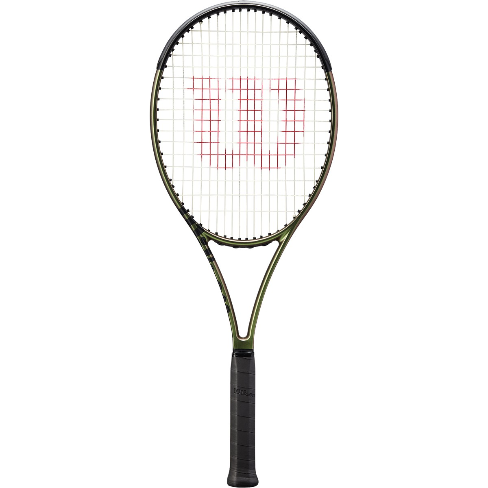

Wilson Blade 98 v8

Introducing the Blade 98 16x19 v8. For this version Wilson adds some speed and stability while keeping the sublime feel and spin-friendly targeting of the previous generation. This stick also packs a buttery 61-RA stiffness, giving it outstanding ball feedback. For 2021 Wilson keeps the revolutionary layup technology that was originally used in the Blade v7 under the name FeelFlex. For this update, Wilson also introduces Direct Connect Technology which fuses the butt cap directly to the carbon fiber portion of the handle for added stability. Additional updates include Wilson’s new Chameleon Paint which activates subtle color changes under different angles and light conditions. Experienced players looking for speed, spin, precision and feel should love this one.